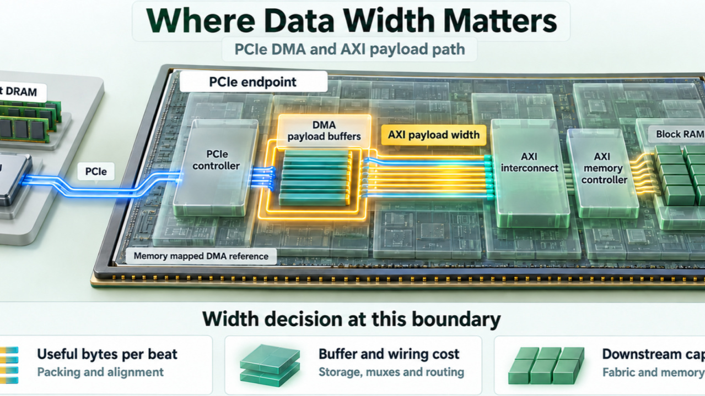

SOC ARCHITECTURE / PPALS
Design choices.
System consequences.
A problem driven series on power, performance, area, latency and scalability. Start with a bandwidth decision, then test the assumptions in the lab.

ARTICLEPART 01
Wider Datapath or Higher Frequency ?
Compare three ways to double useful throughput, with workload and physical design assumptions made explicit.
Read full article ↗INTERACTIVE LABPART 01.1
Width vs Frequency
Explore the existing lab. Adjust constraints and inspect the model behind every result.
Explore ↗PPALS is a system view.
Here, performance means useful throughput. Latency tracks how long one operation takes. Scalability asks how effectively the architecture handles more work as resources grow.